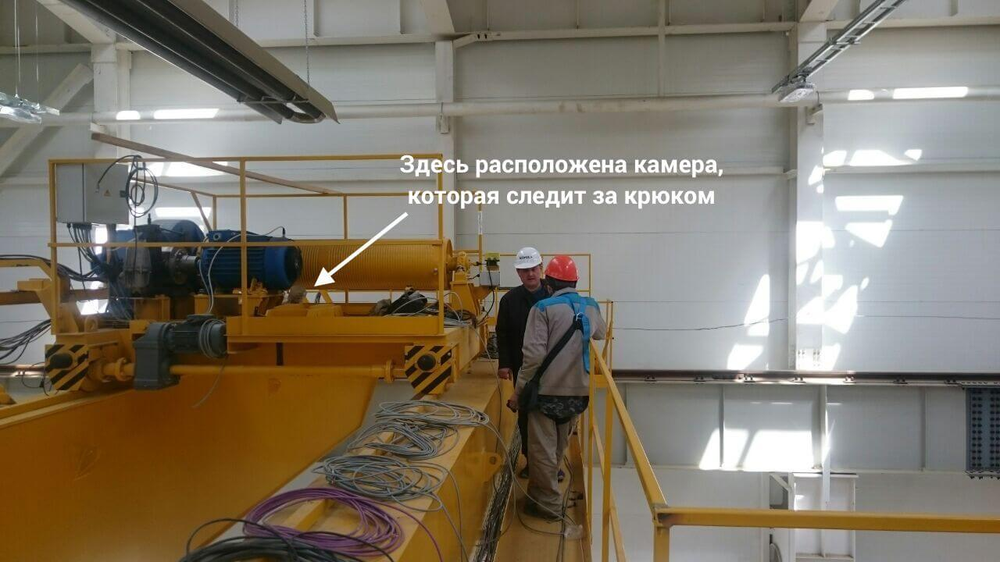

Robodem
Студия компьютерного зрения и промышленных роботов
Робототехника • Искусственное зрение • Искусственный интеллект
Студия компьютерного зрения и промышленных роботов
Робототехника • Искусственное зрение • Искусственный интеллект
Клиент хотел упростить работу со строительным краном. Чтобы кран сам останавливался, если груз за что-то зацепился. Или чтобы корректировал положение подвесного крюка, если тот случайно раскачался.
Цифровая камера на верху крана смотрит на крюк, на котором изображена метка. С помощью машинного зрения программа распознает метку и вычисляет ее смещение относительно центра. Система управления «говорит» крану двинуться так, чтобы компенсировать это смещение. Можно взяться за крюк и потащить его в сторону — тогда кран поедет как на веревочке.

Раньше работники завода вручную сортировали камни для бус, на глаз определяя форму и наличие брака. Иногда сотрудники делали ошибки и пропускали плохие камни. Владелец завода заказал аппарат, который сам сортирует бусины.
Вы загружаете бусины в ящик. С помощью камер машина за долю секунды создает 3D-модель каждого камня. Затем система анализирует, есть ли на бусине сколы или другие дефекты, считывает размеры и форму. Еще через секунду камень попадает в соответствующий отсек.
В 2013 году компания КРОК организовала конкурс: победит тот, чей дрон быстрее всех самостоятельно пролетит по коридору длиной 30 метров и приземлится в нескольких контрольных точках. Мы поставили цель создать такую систему, которая видит дорогу и преграды только при помощи камер. Специально отказались от использования GPS, сенсоров и датчиков. Наш беспилотник обошел 536 соперников и победил в конкурсе.
Раньше работники компании вручную складывали мозаику из керамики. Мы разработали аппарат, который взял это на себя.
Вы загружаете картинку, робот «в своей голове» делит ее на клетки 64×64. Затем сам подбирает кусочки керамики нужного цвета и выкладывает панно. Аппарат работает с 128 цветами. Оператору не надо возиться с плитками и сортировать их. Мы сделали ПО, а над «железной» частью проекта работала компания «Русский инженер».
«Раньше мы использовали ручной труд. Но иногда работники ошибались, и лишняя деталь портила общий вид мозаики. Робот решил эту проблему, а к тому же увеличил скорость производства, ведь машине не нужно отдыхать». — Клиент
Представьте печатную плату с деталями. Ее погружают в специальную печь, чтобы детали припаялись — такой метод называется поверхностным монтажом. Заказчик планировал производить монтаж на конвейере. Мы разработали систему, которая следит, чтобы все элементы были расположены правильно.
Вы загружаете наборы с платами и деталями в аппарат. Манипулятор с присоской сам раскладывает детали на плате. Камеры видят, правильно ли расположены элементы. Система рассчитывает, с какой стороны их нужно подвинуть. Если установить деталь правильно не удается, плата сбрасывается с конвейера в специальный ящик. Все получившиеся платы нагреваются. Мы разработали ПО (компьютерное зрение, распознавание деталей и навигация манипулятора). «Железную» часть (оборудование и механику) разработали наши партнеры.
Представьте кубики, разбросанные случайным образом. И вы, и ваш ребенок быстро соберете пазл. А вот для робота в 2001 году это было сложной задачей: распознать картинки и передвинуть кубики в нужном порядке. Именно такого робота мы сделали для организаторов выставки NeuroPower в Вене. Нейросеть обучилась распознавать кусочки изображения и складывать единый рисунок.
На столе стоит робот с камерой. Над ним висит еще одна камера, которая помогает ориентироваться. На поверхности стола нет никаких меток. Робот распознает картинки, передвигает и переворачивает кубики так, что в итоге складывается рисунок.